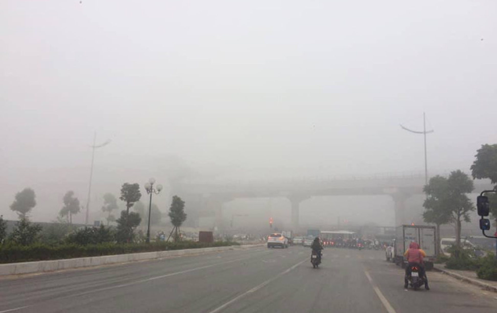

<div class="social-page-container">
    <base-container>
        <div class="social-page-container_header"></div>
        <div class="social-page-container_section_1">
            <v-row justify="center">
                <v-col cols=8>
                    <div class="social-page-container_section_1--main">
                        
                        <h4>Chiều tối và đêm 13/5, các khu vực đều mưa dông, đề phòng thời tiết nguy hiểm</h4>
                        <p>16.05.2021</p>
                    </div>
                </v-col>
                <v-col cols=4>
                    <div v-for="(item,index) in mainPosts" :key="index" class="social-page-container_section_1--sub">
                        
                        <h4>{{item.title}}</h4>
                        <p>{{item.date}}</p>
                    </div>
                </v-col>
            </v-row>
        </div>

        <div class="social-page-container_section_2">
            <v-row justify="center">
                <v-col v-for="(item,index) in subPostsFirstRow" :key="index" auto>
                    <div class="social-page-container_section_2--item">
                        
                        <h4>{{item.title}}</h4>
                    </div>
                </v-col>
            </v-row>
            <v-row justify="center">
                <v-col v-for="(item,index) in subPostsSecondRow" :key="index" auto>
                    <div class="social-page-container_section_2--item">
                        
                        <h4>{{item.title}}</h4>
                    </div>
                </v-col>
            </v-row>
        </div>
    </base-container>
</div>